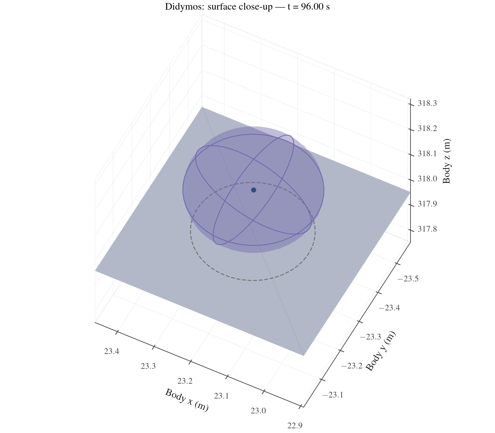
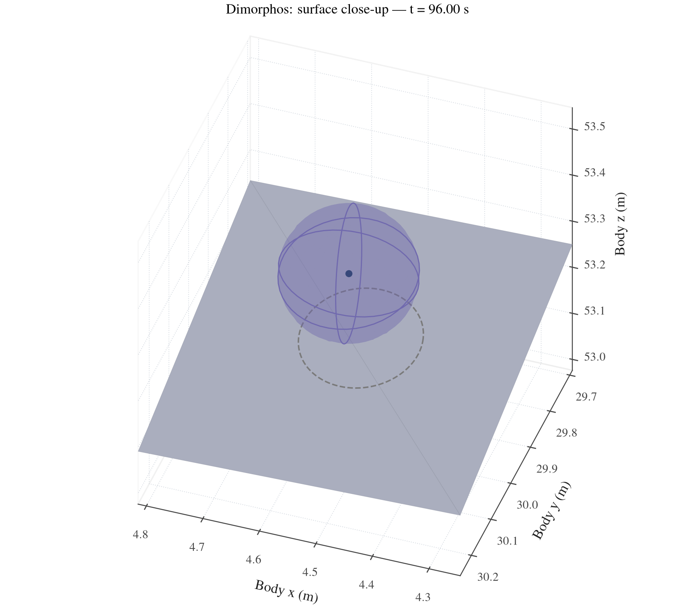
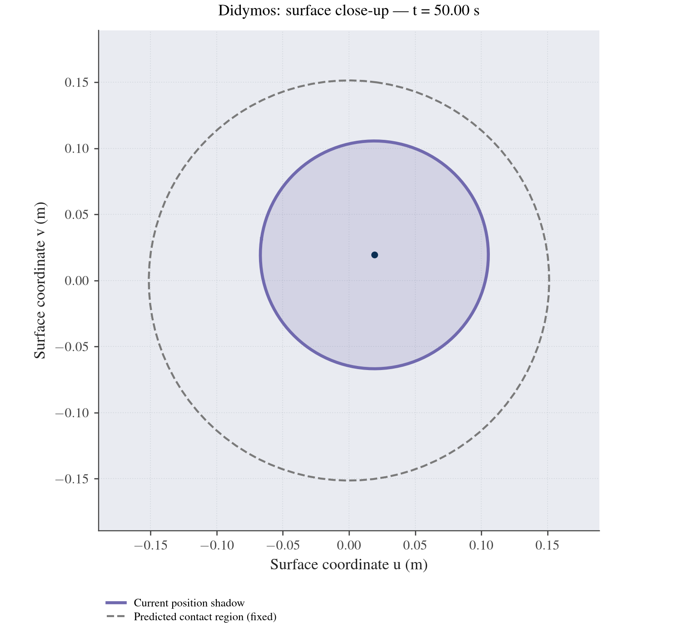
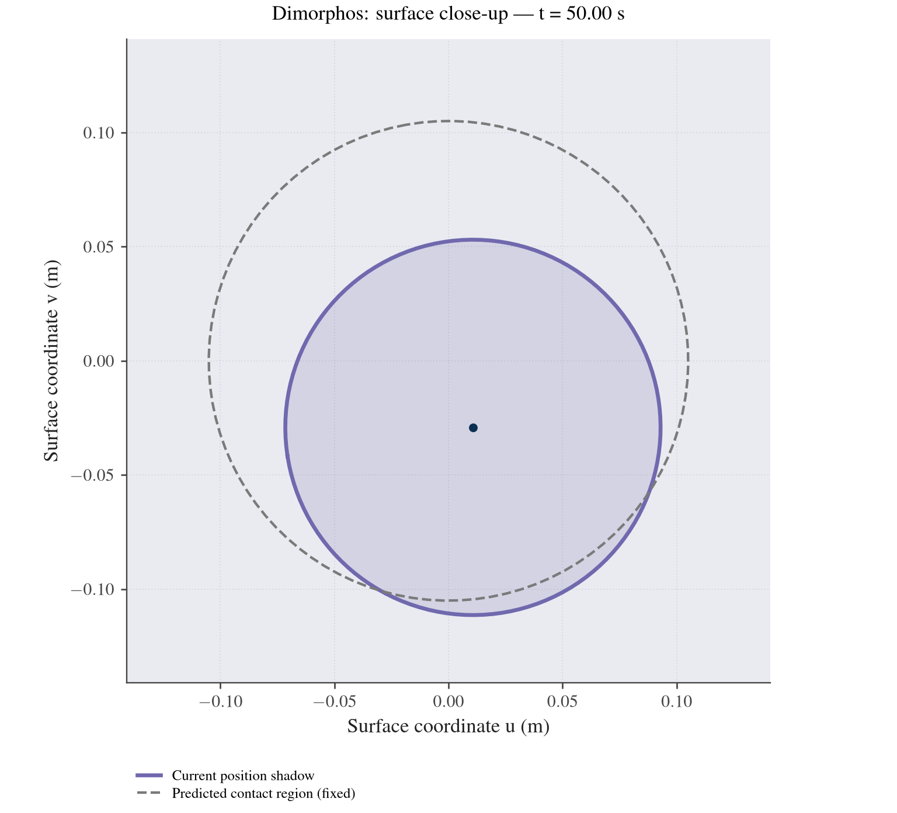
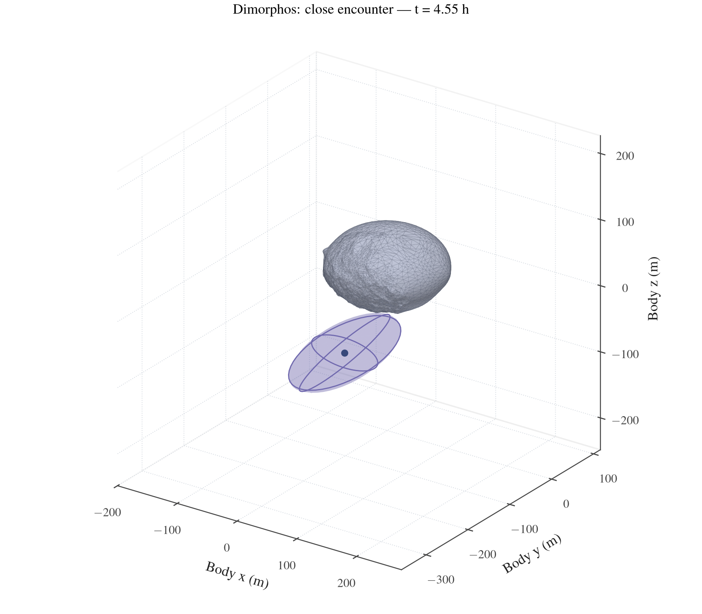

Surface close-ups
These views zoom in on the spacecraft's position ellipsoid and nearby target surface. The camera uses a fixed, metre-scale view box in the target body's coordinates. The companion, enclosing sphere and long trajectory are omitted so that the ellipsoid and surface contour remain visible.
Choose a view:
| View | What changes during playback |
|---|---|
| Didymos surface ellipsoid | The 3D position ellipsoid approaches the actual surface near contact |
| Dimorphos surface ellipsoid | The same local view for the secondary |
| Projected surface uncertainty | The current position's two-dimensional marginal changes across the approach |
| Dimorphos close encounter | The target and a large position ellipsoid during the closest part of the longer encounter |
All dimensions are physical metres. The saved trajectories and covariance remain the inputs; the close-up changes the camera and selected time interval. The contact cases are the direct near-field examples. The longer encounter is the six-hour secondary case. No simulated measurements or new estimation information are added.
Didymos surface
The camera faces the resolved landing facet and shows the final part of the approach. The ellipsoid remains at its actual target-relative position and scale. The mesh below it is the actual shape model, cropped only for display. Near nominal contact the fixed-time free-flight ellipsoid can straddle the surface because contact times differ; the dashed contour is the separate event-corrected contact-location forecast.

Dimorphos surface
This view uses Dimorphos' own target frame, surface facet and covariance. The camera is fixed and the body surface stays still during playback.

Projected surface uncertainty
The purple ellipse shows the current position uncertainty projected along the local surface normal into the fixed landing-facet chart. It evolves as the position covariance propagates. The dashed contour is the separate event-corrected contact prediction from the saved covariance analysis; it stays fixed because the information has not changed.
Didymos

Dimorphos

Let p be the nominal contact point and let the columns of E be the two fixed orthonormal tangent directions of its smooth mesh facet. For current target-frame position r(t) and its complete marginal covariance P_r(t),
u(t)=E^T[r(t)-p],\qquad P_u(t)=E^TP_r(t)E.
The projected coordinates define a two-dimensional marginal. Its 95% contour uses the chi-square quantile for its supported rank, normally two. The three-dimensional ellipsoid uses rank three. A surface projection therefore has its own probability contour; its dimensions are derived from the projected covariance.
The complete projected contour must remain within the same actual smooth mesh facet. The geometry check bounds the barycentric coordinates over the whole confidence ellipse. Unsupported source epochs or a contour leaving that facet are marked unavailable. The renderer does not clip a probability contour to make it appear supported.
The projection is a geometric view of the position distribution at the displayed time. Predicting first contact additionally accounts for uncertainty in event time and the velocity along the surface. Contact time and surface covariance explains that correction. Advancing the display clock with fixed original information does not by itself improve a prediction for the same future contact.
Dimorphos close encounter
The longer example keeps only Dimorphos and the spacecraft's target-relative ellipsoid. The camera covers the saved time window around the closest sampled passage. This exposes the covariance's size and direction without the companion or the full multi-kilometre trajectory setting the frame scale.

This is a finite-horizon, gravity-only encounter. It supplies no surface contact in the accepted arc. Its ellipsoid is the complete target-relative fixed-time covariance; the earlier finite-amplitude checks describe the linear approximation's measured limits.
Camera, time and reuse
CloseupCamera declares a fixed centre and cubic span in target-frame metres, plus view angles in degrees. The body mesh and the uncertainty keep the same physical coordinates. Close-up frames use a selected continuous interval of supported saved epochs. The ellipsoid, projection and surface are not enlarged independently.
The animations use linear display interpolation of the mean and covariance between adjacent saved epochs. A convex combination preserves positive semidefiniteness. The source arrays are unchanged, and interpolation does not cross an unsupported epoch or the end of free-flight covariance. This produces smooth playback without rerunning the propagation or adding information.
import numpy as np
from basco.flight_plotting import read_flight_scene
from basco.flight_closeups import (
CloseupCamera, animate_closeup,
surface_projection_history, animate_surface_projection,
)
scene = read_flight_scene("results/my-landing/scene")
camera = CloseupCamera(center_m=scene.contact_point_m, span_m=1.0)
supported = np.flatnonzero(scene.ellipsoid_available)
start, end = scene.epochs[supported[-2:]]
animate_closeup(scene, "surface-closeup.mp4", camera=camera,
time_window=(start, end))
projection = surface_projection_history(scene)
animate_surface_projection(scene, "surface-projection.mp4", projection)
Choose camera bounds and time windows appropriate to the actual position and covariance extent. The fragment uses an existing target-frame scene with a resolved contact point and tangent chart. The saved-data producer chooses those bounds from the accepted examples and writes the five figure/video pairs. It performs no force evaluation or new covariance solve.
python3 -B tools/dev.py run --plot tools/evidence/landing_closeups.py \
--figures "$PWD/results/closeup-figures" \
--output "$PWD/results/closeup-report" --animation
The reusable functions are in basco.flight_closeups. Static figures use closeup_figure and surface_projection_figure; the projection arrays are provided by surface_projection_history. Scientific and media acceptance owns the exact source intervals, camera spans, covariance comparisons and checked media.